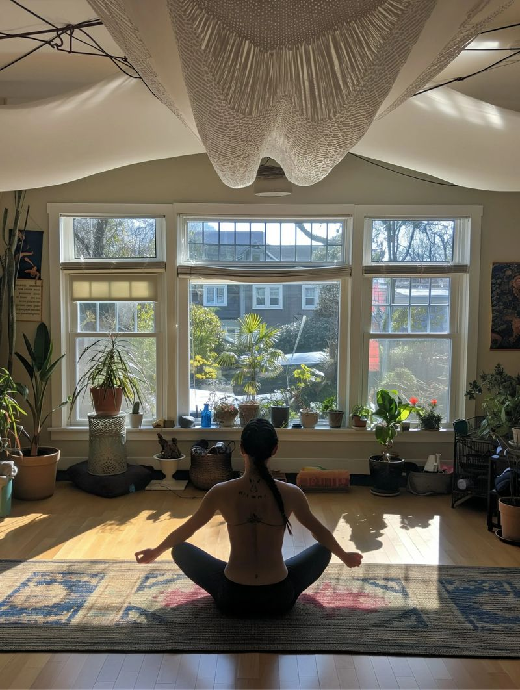

How Mindfulness Enhances Your Well-Being
Discover the benefits of mindfulness and simple techniques to incorporate it into your daily life.

Mindfulness has become a buzzword in recent years, but its roots lie in ancient practices that emphasize living in the present moment. The core of mindfulness is simple yet profound: to pay attention to the here and now without judgment. This small shift in focus can have transformative effects on your mental, emotional, and even physical health. Research shows that mindfulness can help reduce stress, improve focus, and enhance emotional resilience. When you practice mindfulness, you’re not just reacting to life’s challenges; you’re actively observing them and responding thoughtfully. This creates a space between stimulus and response, allowing for better decision-making and greater inner peace. Incorporating mindfulness into your daily life doesn’t require hours of meditation. Start with these simple techniques: Breath Awareness: Take a few moments to focus entirely on your breath. Inhale deeply through your nose and exhale slowly through your mouth. Notice the sensation of air moving in and out, and allow your mind to rest on this natural rhythm. Mindful Eating: Turn your next meal into a mindfulness practice by slowing down and savoring every bite. Pay attention to the flavors, textures, and aromas. Eating mindfully not only enhances your appreciation of food but also improves digestion and prevents overeating. Body Scan Meditation: Lie down or sit comfortably and mentally scan your body from head to toe. Notice areas of tension or discomfort, and consciously relax each part of your body as you go. This practice is particularly useful before bedtime to promote restful sleep. The beauty of mindfulness is that it can be practiced anytime, anywhere. Whether you’re taking a walk, drinking your morning tea, or simply sitting quietly, mindfulness helps you fully experience life as it unfolds. Over time, this practice can lead to profound shifts in your overall sense of well-being.
Mindfulness has become a buzzword in recent years, but its roots lie in ancient practices that emphasize living in the present moment. The core of mindfulness is simple yet profound: to pay attention to the here and now without judgment. This small shift in focus can have transformative effects on your mental, emotional, and even physical health.
Research shows that mindfulness can help reduce stress, improve focus, and enhance emotional resilience. When you practice mindfulness, you’re not just reacting to life’s challenges; you’re actively observing them and responding thoughtfully. This creates a space between stimulus and response, allowing for better decision-making and greater inner peace.
Incorporating mindfulness into your daily life doesn’t require hours of meditation. Start with these simple techniques:
Breath Awareness: Take a few moments to focus entirely on your breath. Inhale deeply through your nose and exhale slowly through your mouth. Notice the sensation of air moving in and out, and allow your mind to rest on this natural rhythm.
Mindful Eating: Turn your next meal into a mindfulness practice by slowing down and savoring every bite. Pay attention to the flavors, textures, and aromas. Eating mindfully not only enhances your appreciation of food but also improves digestion and prevents overeating.
Body Scan Meditation: Lie down or sit comfortably and mentally scan your body from head to toe. Notice areas of tension or discomfort, and consciously relax each part of your body as you go. This practice is particularly useful before bedtime to promote restful sleep.
The beauty of mindfulness is that it can be practiced anytime, anywhere. Whether you’re taking a walk, drinking your morning tea, or simply sitting quietly, mindfulness helps you fully experience life as it unfolds. Over time, this practice can lead to profound shifts in your overall sense of well-being.